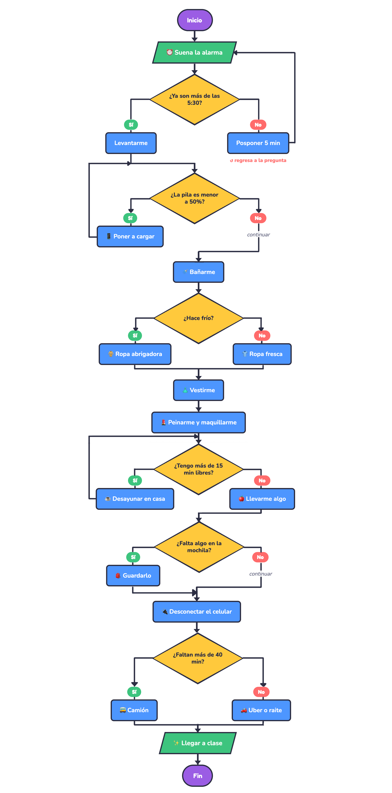

Spoiler: ya usas algoritmos todos los días, aunque no lo sepas 😉
Tu rutina para llegar a clase en la mañana... ¡es un algoritmo!
La computadora no piensa: hace exactamente lo que le decimos y en el orden que se lo decimos.
Pasa el cursor por cada tarjeta 👆
Cada paso es claro, sin dudas.
"Revisa que el cel tenga más de 50%" y no "revisa el cel"Los pasos siguen una secuencia lógica.
Primero me baño, luego me vistoTiene un inicio y un fin.
Empieza con la alarma y termina al llegar a claseCon la misma situación, da el mismo resultado.
Si hace frío, siempre elijo ropa abrigadoraRecibe datos, los trabaja y entrega un resultado.
Hora y clima ➜ decido ➜ llego a tiempoEstos son los 5 pasos que vamos a seguir siempre.
¿Qué me piden? ¿Qué quiero lograr? ¿Qué datos tengo?
¿Qué acciones tengo que hacer? ¿Qué decisiones tengo que tomar?
¿En qué orden van las acciones? ¿Qué va primero y qué después?
Escribe los pasos en español, con palabras clave como Inicio, Si, Entonces, Sino y Fin.
Dibuja el algoritmo con figuras y flechas en LucidChart o Visio.
El pseudocódigo tiene partes y palabras clave. Si las usas bien, cualquier persona entiende tu algoritmo igual que tú.
Es escribir un algoritmo en español, paso por paso, usando algunas palabras clave (frases especiales) que todos entendemos igual.
Es como un borrador del programa: todavía no es código, pero ya tiene su forma.
Porque le dan estructura. Igual que una receta tiene "Ingredientes" y "Preparación", el pseudocódigo tiene palabras que indican dónde empieza, qué datos recibe, qué hace, qué decide y dónde termina.
Dónde empieza
InicioLa información que usamos (variables)
duracionViajePedir o recibir datos
Leer horaAcciones o cálculos
BañarmeElegir un camino
Si ... EntoncesMostrar un resultado
EscribirDónde termina
Fin| Palabra clave | Significado | Ejemplo |
|---|---|---|
| Inicio / Fin | Abren y cierran el algoritmo | Inicio ... Fin |
| Leer | Recibir un dato (entrada) | Leer horaActual |
| Escribir | Mostrar un mensaje o resultado (salida) | Escribir "Ya llegué" |
| ← | Guardar un valor en una variable ("se le asigna") | sobrante ← 180 - 178.5 |
| Si ... Entonces | Pregunta: si se cumple, hago esto | Si hay fila Entonces |
| Sino | Lo que hago si NO se cumple | Sino |
| FinSi | Cierra la decisión | FinSi |
| Mientras ... Hacer | Repetir algo mientras se cumpla una condición (se cierra con FinMientras) | Mientras tenga sueño Hacer |
| // | Comentario: una nota para quien lo lee, no es una acción | // 6:00 a.m. |
Inicio Leer horaActual Si horaActual es antes de las 6:20 Entonces Irme en camión Sino Pedir un Uber FinSi Escribir "Voy en camino" Fin
Da clic en cada paso para verlo resuelto.
Inicio Sonar la alarma Si ya son más de las 5:30 Entonces Levantarme de inmediato Sino Posponer la alarma 5 minutos FinSi Revisar la pila del celular Si la pila es menor a 50% Entonces Poner el celular a cargar FinSi Bañarme Revisar el clima Si hace frío Entonces Elegir ropa abrigadora Sino Elegir ropa fresca FinSi Vestirme Peinarme y maquillarme Si tengo más de 15 minutos libres Entonces Desayunar en casa Sino Llevarme una fruta o un pan FinSi Revisar la mochila Si falta algo (cuaderno, laptop, cargador, credencial, llaves) Entonces Guardarlo en la mochila FinSi Desconectar el celular y guardarlo Revisar la hora Si faltan más de 40 minutos para la clase Entonces Irme en camión Sino Pedir un Uber o pedir raite FinSi Llegar a clase super bonita y a tiempo Fin
Cada línea del pseudocódigo se convierte en una figura. Baja a la sección Diagrama para ver el diagrama completo de este ejemplo 👇
Cada figura tiene un significado. Así las usamos en LucidChart o Visio:
Marca el inicio y el fin
Entrada o salida de información
Una acción o proceso
Una decisión: Sí o No
Indica el orden a seguir
Así se ve el algoritmo completo. ¡Tiene 6 decisiones!

Vas a resolver 3 ejercicios aplicando todo lo que vimos.
Crear un algoritmo con todo lo que haces desde que te despiertas hasta que llegas a tu clase de las 7:00 a.m., indicando la hora de cada acción.
Tu clase empieza a las 7:00 a.m. Necesitas organizar tu mañana (despertar, bañarte, arreglarte, desayunar, revisar tu mochila, tu celular y tu transporte) para llegar a tiempo y sin olvidar nada.
Bañarme // 5:40 a.m.Crear un algoritmo para comer algo entre clases sin llegar tarde a la siguiente.
Tienes 20 minutos libres entre una clase y otra y tienes hambre. Necesitas decidir dónde comprar, qué comer, cómo pagar y regresar a tiempo a tu salón.
Crear un algoritmo que calcule cuántas canciones puedes escuchar en un viaje y cuánto tiempo te sobrará.
Vas a hacer un viaje en autobús que dura 180 minutos (3 horas) y cada canción dura 3.5 minutos. Quieres saber: ¿cuántas canciones completas puedes escuchar? y ¿cuántos minutos te sobrarán al final del viaje?
duracionViaje, duracionCancion, canciones, tiempoUsado, sobrante), Leer para pedir los datos, ← para guardar los resultados y Escribir para mostrarlos. Usa Entero( ) para quedarte solo con la parte entera de la división.Entrega un documento de Word con los 3 ejercicios, cada uno con sus 5 pasos completos y la imagen de su diagrama.
Sube el Word al repositorio que creaste para la Actividad 1.
Sube el mismo Word, y dentro del documento pega el enlace a tu repositorio de GitHub.
Diseñar un proceso de ventas, controlar un inventario o atender a un cliente paso a paso también es crear algoritmos. ¡Esa habilidad te va a servir en todo tu camino en comercio!